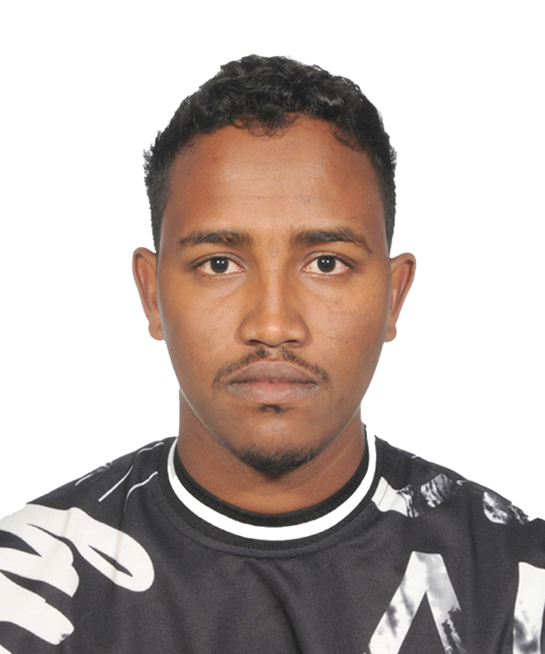

My Resume
Daud Mohamed

Summary
Personality
I am a hard-working individual with excellent communication and team work skills.
Throughout my working life, I have been able to use these valuable skills to work to the best of my ability
and achieve both team and individual targets. I am a highly motivated individual; I can be relied on to
show initiative
and enthusiasm in all areas of work with excellent attention to detail.
Objectives
I want to advance my profession career by being part of a challenging and dynamic organization
that is geared towards professionalism and excellence as well as gain more experience and insight
on development projects. I also look forward to working with motivated and well-managed team
that is
commitment to organizational mission and core values while being complaint with donor
regulations.
Eduction
Sakarya University
It all began with my graduation from Sakarya university in Sakarya city,
Turkey, in 2026,
where I laid the foundation for my academic endeavors.
Udemy
Full stack UI UX web and app developer
Professional Work Experience
Customer Care manager------Ardaykaab Scholarships 2019/2020
Admin and Finance-----Tamam conistruction & contracting company 2021/2023
Awards and Certifications
Employee of the year (2020)---Ardaykaab
Skills
Full stack web and developer
Professional Graphic designer
Certified Financial analyst
Trainings and seminars
Al-sharq youth conference 20223
Attend Social accountability and rule of law at SONYO umbrella 2020.
Public-private Partnership at Young African Leadership (YALI) 2020.
Understanding Of climate change at Young African Leadership (YALI) 2019.
National Workshop on violence against children (Save the Children), January 2018
Competencies
strong creative and innovative ability
Problem solving capabilities
Teamwork, decision making and commercial awareness
Communication and report building skills
Strong creative and innovative ability
Hard working, confident, disciplined and result oriented with high sense
of Responsibility
Well organized, methodical and Have a good time management
Langueges
Somalia---Native
English---fluance
Arabic---very good
Turkish---Very good